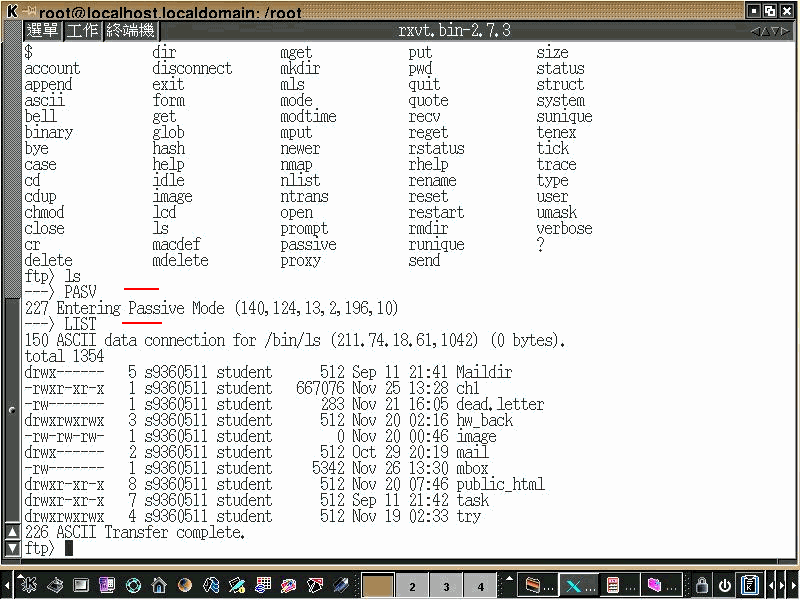
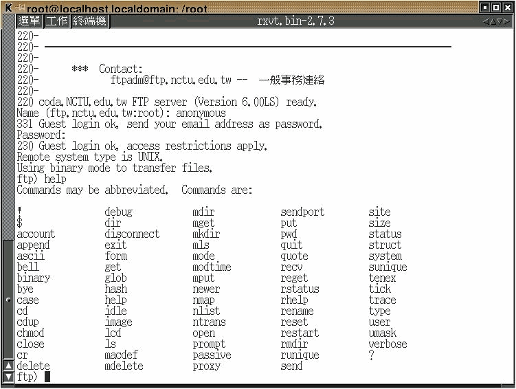
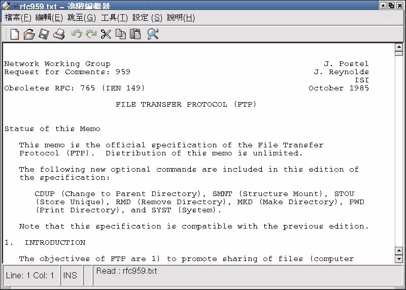

File Transfer Protocol (FTP)
Find and read RFC959 for FTP (Key idea has been discussed in the class) and list all of the client commands that are supported by the RFC. - List all of the FTP client commands - Interactive with FTP Server - Get RFC 959 by Archive and Ftp
Concept
Users use below applications
- Ftp clients (e.q. cute-Ftp; ws_ftp...) to access the Ftp Servics.
but we will not use any client-side applications to access above Services. instead of telnet. it will help us to know more detail of FTP protocol.
Requirements
- Red-Hat Linux 6.2 + KDE/X-window
FTP
Step-by-Step by using telnet to access FTP server
- List all of the client commands that are supported by the RFC 595.
- Connect to FTP Server (port 21) and list all commands users can use.
-
User has to login NTUT's
Sun OSServer and telnet to NTUT's FTP Server. (Optional, if user wants to runFTP clientonSun OSServer) -
Issue below command on Terminal to access NTUT FTP Server after login
NTUT Sun OS Server.
telnet 140.124.13.2 21
- Issue below FTP commands trying to list file(s) from NTUT FTP Server
| # | PROMPT | DESCRIPTION |
|---|---|---|
| 1 | user s9360511 ⏎ | Identify yourself to the remote FTP server (please use your personal account) |
| 2 | pass |
Issue the password to FTP Server(please use your personal password) |
| 3 | HELP ⏎ | List all FTP commands |
| 4 | PWD ⏎ | Print the name of the current working directory on the remote machine, in this case we saw /user/student/s9360/s9360511 |
| 5 | list ⏎ | Print a listing of the contents of a directory on the remote machine under folder /user/student/s9360/s9360511, but it will pop up a warnnig message saying 425 Can't build data connection: Connection refused. |
Screenshot
- Screenshot of running
telenet
Download The File
Step-by-Step
-
In above case, When users issue
LISTcommand, Server responses425 Can't open data connection. -
Refer to Richard Stevens TCP/IP Illustrated vo1.1
CH27 FTP: File Transfer Protocol, Server has to openData ChannelforData Connection. -
Terminal 1: Issue below command to access NTUT FTP Server (
Command Port)telnet 140.124.13.2 21 -
Terminal 1: Issue below command on
Command Portfind outData Port's number
| STEP | PROMPT | DESCRIPTION |
|---|---|---|
| 1 | user s9360511 ⏎ | Identify yourself to the remote FTP server (please use your personal account) |
| 2 | pass |
Issue the password to FTP Server(please use your personal password) |
| 3 | PWD ⏎ | Print the name of the current working directory on the remote machine, in this case we saw /user/student/s9360/s9360511 |
| 4 | PASV ⏎ | Request the remote server open a port for the data connection and return the address of that port. In this case, 140,124,13,2,195,133, it means server opens Port 50033(195*256*133) for Data Connection |
- Terminal 2: Issue below command on
Terminal 2to access NTUT FTP Server.
telnet 140.124.13.2 21
- Terminal 2: Issue below FTP commands on
Terminal 2, accessing Port50033.
telnet 140.124.13.2 50033
- Terminal 1: Issue below command on
Data port
| STEP | PROMPT | DESCRIPTION |
|---|---|---|
| 5 | LIST ⏎ | 回到原本的 FTP 控制埠(21)下命令 |
在 FTP 資料連接埠的視窗(Terminal 2)即可看到下 LIST 指令 所回應的資料,回應完後主機即將埠口關閉
- Terminal 1: Issue below command on
Data Portto say Goodbye to FTP Server
| STEP | PROMPT | DESCRIPTION |
|---|---|---|
| 6 | QUIT ⏎ | Logout FTP Server |
Screenshot
- Screenshot of
telenet

Debug Mode
Screenshot
- Enable
Debug Mode(with-doptional) when accessing FTP server.
ftp -d 140.124.13.2
- User can observe and diagnostic the command when the FTP-Client issues to FTP-Server.

- In the case, we learned
lscommand was the combination ofPASVandLISTcommands.

RFC 959
Get RFC 959 from any FTP Server
- Try to find the
ref959document fromNCU Archie Service.

- Use NCTU FTP Server.

- FTP to NCTU FTP Server.

- Login with
anonymousaccount, useEmail AddressasLogin Password, list available command(s) by pressinghelp.

- Listing all files.
- Navigate to
Documents/RFC, issue below command to fetch RFC file.
get rfc959.txt #<= get file rfc959.txt
quit #<= logout FTP server

- Reading from the Editor.

Get RFC 959 from IEFT
-
We can found RFC from IETF Website also.

-
Display
RFC 0959

Advanced
- FTP Code
226 - Closing data connection. Requested file action successful (file transfer, abort, etc.).
$author: Jin-Wen (Ed) Lai
$date: Oct. 2001
$revised: Mar. 2018
$keywords: computer, networks, network, http, RFC.